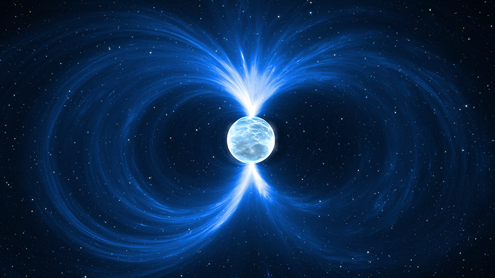

Estrella de Neutrones
Las estrellas de neutrones son los restos compactos que quedan después de
que una estrella masiva explota en una supernova. Son uno de los objetos más
densos del universo: toda su masa (que puede ser 1.4 a 2 veces la del Sol) está
comprimida en una esfera de apenas 20 kilómetros de diámetro.
En una estrella de neutrones, los átomos colapsan y los protones y electrones
se combinan, formando principalmente neutrones, de ahí su nombre.

Características principales
- Densidad extrema → una cucharadita de materia de estrella de neutrones pesaría miles de millones de toneladas en la Tierra.
- Campo gravitatorio enorme → mucho más fuerte que el de cualquier planeta o estrella común.
- Rotación rápida → al ser tan compactas, suelen girar muy rápido (decenas o cientos de veces por segundo).
- Campos magnéticos intensos → millones de veces más poderosos que los de la Tierra.
Tipos de estrellas de neutrones
- Púlsares → estrellas de neutrones que emiten radiación en pulsos regulares (como te conté antes).
- Magnetars → tienen campos magnéticos extremadamente fuertes, capaces de liberar enormes cantidades de energía en forma de rayos X o gamma.
Volver al inicio